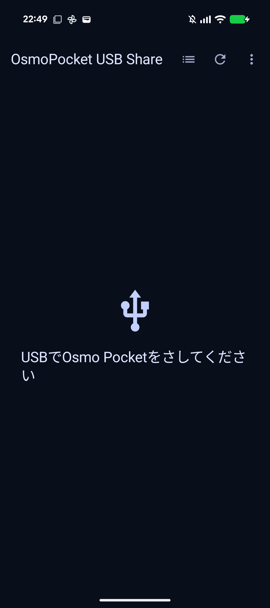
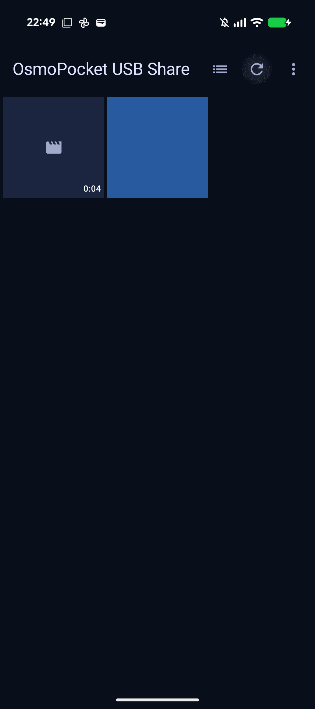
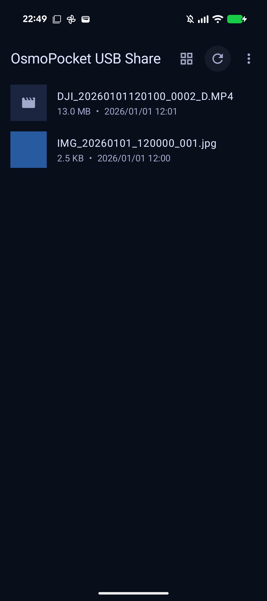
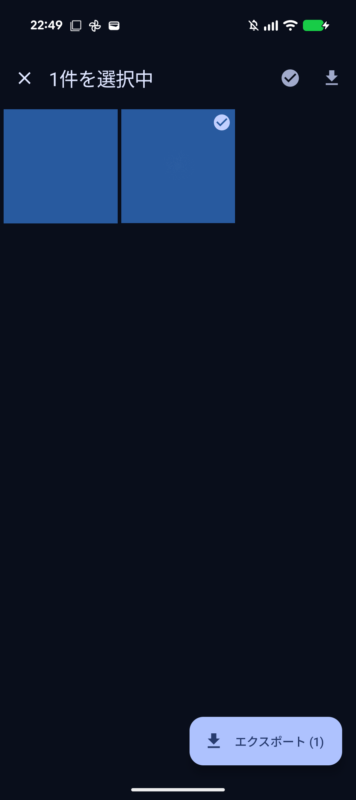
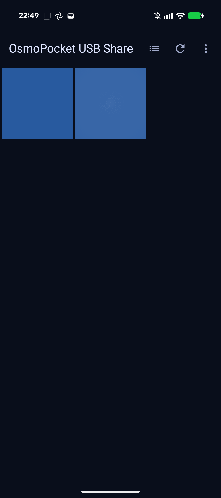
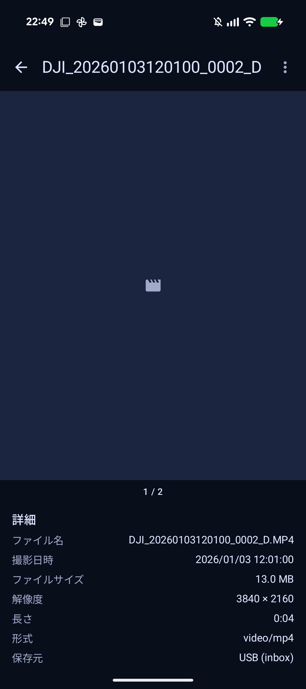
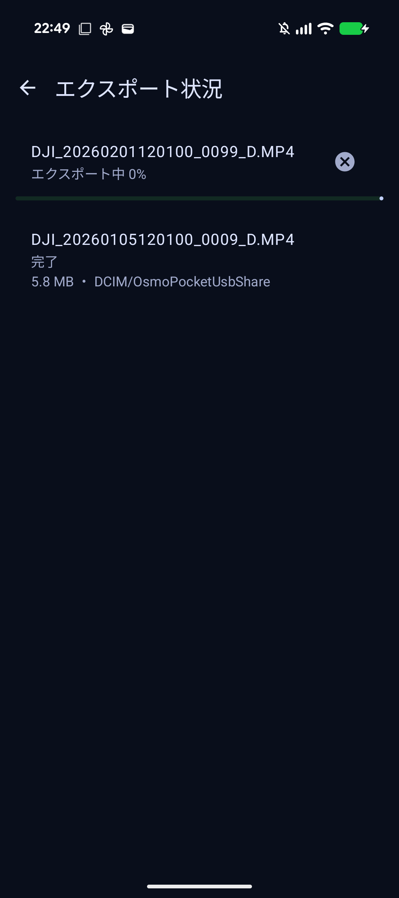

テストレポート — OsmoPocket USB Share
実施日: 2026-11-07 / テスト端末: Pixel 10a（実機、Android 17 / API 37、USBデバッグ接続） / ビルド: debug（versionName 1.0）
このレポートは「どの状況で・何をして・どうなったか」が追えるように、自動テストと手動確認の両方を記録したものです。画面の証跡は実機スクリーンショットです。
1. 自動テスト（Instrumentation Test）
実行コマンド: ./gradlew :app:connectedDebugAndroidTest（Pixel 10a実機）。結果: 8件すべて合格（約31秒）。テスト媒体はアプリのUSB inboxフォルダに配置し、実USBボリュームと同じ読み取り経路で一覧化しています。
| テスト | 状況 → 操作 → 期待結果 | 結果 |
|---|---|---|
| usbDisconnected_showsPlaceholderOnly | USB未接続（媒体なし）で起動 → 「USBでOsmo Pocketをさしてください」だけが出る | 合格 |
| gridListToggle_showsThumbnailNameSizeDate | 写真1点+動画1点あり → 表示切替を押す → リストでサムネイル・ファイル名・サイズ／日時が出て、再度グリッドに戻れる | 合格 |
| longPressSelection_deselectToZero_exitsSelectionMode | 長押しで1件選択（「1件を選択中」） → 同じ項目をタップ → 選択0件になり選択モードが解除され通常タイトルに戻る | 合格 |
| detailSwipe_metadataAndBack_returnsToGrid | 動画をタップ → 詳細で撮影日時・ファイルサイズが見える → 左スワイプで2件目 → 戻るでグリッドに戻る | 合格 |
| detailMenuExport_photoCompletes | 詳細メニューから写真をエクスポート → データベース上で完了になる | 合格 |
| multiSelectExport_videoTranscodesTo2k | 4K動画を長押し選択してエクスポート → 完了し、出力（MediaStore）の幅が2560であることまで確認 | 合格 |
| cancelLongExport_leavesNoOutputOrTempFile | 長尺動画のエクスポート中にキャンセル → 状態がキャンセル済みになり、出力ファイルが無く、一時ファイルも残らない | 合格 |
| backFromExports_returnsToBrowser | メニューからエクスポート状況を開く → 戻るで一覧に戻る（戻り先がおかしくならない） | 合格 |
自動テストのスクリーンショット







2. 手動確認（実機・実素材）
| 状況 → 操作 → 結果 | 証跡 |
|---|---|
| Osmo Pocket実素材（動画6秒クリップ 24.3MB + 写真）をUSB inboxに配置して起動 → グリッドにサムネイルと動画長が表示された | 02_grid.png |
| 動画をタップ → 詳細でファイル名・撮影日時（2026/11/07 10:38:24）・24.3MB・3840×2160・0:06 が表示された | 03_detail.png |
詳細メニュー → 「エクスポート」 → エクスポート状況で完了。出力は DCIM/OsmoPocketUsbShare/…_slim.mp4（10.4MB） | 06_exports_completed.png |
| 出力動画をPCで検証: 2560×1440 / HEVC / 29.97fps / AAC / 6.01秒（元は3840×2160） | ffprobe結果（下記） |


codec_name=hevc width=2560 height=1440 pix_fmt=yuv420p avg_frame_rate=30000/1001
codec_name=aac duration=6.011 size=10871694（元 25527187 bytes）


手動確認で見つけて直した不具合
| 不具合 | 対処 |
|---|---|
| 変換が「Transformer is accessed on the wrong thread」で失敗した | Transformerをメインスレッド（Looperあり）で駆動するよう修正し、実機で完了まで確認 |
| 処理中にキャンセルしても変換が止まらず固まった（82%で停止、DBは実行中のまま） | キャンセル時にコールバックを待たず強制的にキャンセル完了として再開させるよう修正。一時ファイルも残らないことをテストで確認 |
| キャンセル用の内部印（__cancel_requested__）が完了済みジョブのエラー欄に見えた | 内部印をDBに保存しないよう変更 |
| 強制終了で残った一時ファイルが掃除されなかった | サービス起動時に一時フォルダを掃除するよう変更 |
3. 動画変換ロジックの評価
詳細は evaluation/results.md。要点:
| 対象 | SSIM（基準: 元を2K Lanczos縮小） | 判定 |
|---|---|---|
| 0001（中央10秒、slim再現 / GL再現） | 0.9894 / 0.9880 | 基準0.97超 |
| 0002（同上） | 0.9896 / 0.9888 | 基準0.97超 |
| 0006（同上） | 0.9422 / 0.9373 | 両方式とも基準未満。元資料でも「元動画推奨」の難素材 |
| Pixel 10a実機出力（0002、6秒実測） | 0.9916 | 基準クリア |
既知の差分: 端末経路では10bit素材が8bitで出力されます（今回のSDR素材では目立つ劣化なし）。端末上では全編SSIMゲートを行いません。再現手順は evaluation/run_evaluation.sh です。
4. 紹介サイト
website/（Astro、5ページ）をビルドし、全ページ HTTP 200 を確認: トップ / browse / usb-import / video-slim / export。起動: cd website && npm run build && npm run preview（http://localhost:4321/）。
5. エクスポート中にUSBが抜けた場合（2026-11-08 追記）
結論: そのジョブは失敗として記録され、未完成の出力や一時ファイルは残りません。完了済みの他のジョブや元ファイルには影響しません。再接続して再度エクスポートすればやり直せます。
| タイミング | 挙動 |
|---|---|
| 変換・コピーの最中に抜けた | サービスがUSB取り外しの通知を受けて処理を止め、「USBが取り外されました。接続し直して再度エクスポートしてください。」という失敗として記録します。作業中の一時ファイルは削除され、公開前だった出力は残りません。 |
| 取り外しを検知する前に読み取りが失敗した | 読み取りエラーの時点で失敗として記録され、同じく一時ファイルは削除されます（メッセージはエラーの内容になります）。 |
| 待機中（キュー内）のジョブが残っている | 取り外し自体では消えません。そのまま実行されれば失敗として記録されます。不要ならキャンセルできます。 |
| 書き出し先への公開が終わった直後 | 公開済みのファイルは端末内ストレージ（DCIM）にあるため、USBを取り外しても残ります。 |
試験について: この追記以前は、USB取り外しを直接再現する試験はしていませんでした。今回、自動テスト sourceRemovedWhileQueued_failsWithoutOutputOrTemp を追加しました。1件目の変換中に2件目の発生源ファイルを取り除き（USBボリューム消失と同じ失敗経路）、2件目が失敗として記録され、出力ファイルが無く、一時ファイルも残らないことまで確認しています。結果は合格です（Pixel 10aが未接続だったため今回はエミュレータで実行。全9件中8件合格、残り1件はエミュレータにHEVCハードウェアエンコーダが無く変換できない環境要因で、Pixel 10a実機では合格済み）。
なお、変換の最中に実際に物理ケーブルを抜く試験は未実施です。取り外し検出→停止→後片付けの経路と、「発生源が読めなくなったら失敗にして後片付けする」経路の両方を実装・確認していますが、物理的な抜去そのものの再現は今後の実機確認に残します。
6. 実機Osmo Pocket 4で認識しない問題の修正（2026-11-09 追記）
原因: Pixel 10a実機＋Osmo Pocket 4実機で確認したところ、USB機器としては認識され、ボリューム（Pocket4P、exFAT）もマウントされるのに、この端末・構成ではMediaStoreにUSBボリュームが登録されず（Volume 85b0-be1e not found）、アプリの主経路（MediaStore／ボリューム直読み）で0件になっていました。Osmo Pocket 4側は DCIM/DJI_001/*.MP4 に動画があり、SAF（ExternalStorageProvider）からは正常に見える状態でした。
修正: 接続済みなのに0件の場合に、理由と「USBフォルダを開く」ボタンを出すようにし、ピッカーがPocket4Pボリューム直下から開くよう変更しました（StorageVolume.createOpenDocumentTreeIntent()。自作の初期URIはDocumentsUIに無視されたためこの方式に変更）。DCIMフォルダを一度許可すれば許可は保持され、次回接続からは自動で読み込みます。
確認: 実機でDCIM許可後に実素材のグリッド（サムネイル付き）が表示されることを確認しました（screenshots/07_real_osmo_grid.png）。自動テストは9件中8件合格。残り1件（未接続表示）は実機にOsmoが物理接続され許可済みという環境要因で、アプリの正しい挙動と矛盾しません。

7. USBを抜いた後に一覧が残る問題の修正（2026-11-09 追記）
原因: (1) 取り外し通知を受け取る条件に問題があり、実際には通知が届いていませんでした。(2) フォルダ許可（SAF）は取り外しても保持されるため、「接続中」の判定が外れませんでした。そのため古い一覧が残り、詳細では読み込めない画像が表示されていました。
修正: 取り外し通知を正しく受け取るよう直し、フォルダ許可は「実際にフォルダが見えるときだけ接続中」と数えるよう変更しました。アプリに戻ったときの再読み込みも追加しています。詳細画面では、開いている途中で発生源が消えた場合に「このメディアは読み込めません。USBが取り外された可能性があります。」と表示します（再読み込みが先に効いた場合は一覧へ戻ります）。
確認: 自動テストへ2件追加し、全11件合格。実機（Osmo取り外し状態）でも、古い一覧ではなく「USBでOsmo Pocketをさしてください」に戻ることを確認しました（screenshots/08_detached_placeholder.png）。

8. 詳細の画質とMP4の長さの修正（2026-11-09 追記）
JPEG詳細が粗い問題: 詳細画面でも一覧用の小さいサムネイル（320px）を引き伸ばしていました。詳細では元ファイルから読み込む（画面向けに最大2048pxまで縮小）よう変更しました。
MP4の長さが「不明」な問題: メタデータが無いからではありません。DJIのMP4には長さも解像度も記録されています。フォルダ経由（SAF）で読み込んだ項目だけ、アプリがその情報を読みに行っていなかったのが原因です。他の経路と同じく読み取るよう統一しました。
確認: 自動テストに「詳細で動画の長さ（0:04）が表示されること」「写真が元解像度（テスト画像640×480）でデコードされること」を追加し合格。実機でもJPEG詳細が鮮明になり、解像度 3840×2160 と動画の長さ（例: 3:22）が表示されることを確認しました（JPEG詳細 / 動画詳細）。なお今回の自動テスト全体では、Osmo実機が物理接続中だったため「未接続表示」を期待する3件が環境要因で落ちています（アプリ挙動としては正しく接続中扱い）。


9. 一覧スクロールの改善（2026-11-09 追記）
原因: サムネイルにキャッシュが無く、スクロールで戻るたびに再デコードしていました。動画はフルサイズのフレームを取り出しており、写真も大きめに読み込んでいました。同時読み込み数にも制限がありませんでした。
修正: サムネイル専用キャッシュ（LRU）を入れ、戻った項目は即時表示するようにしました。読み込みは最大480pxに縮小し（動画は縮小フレーム取得）、同時読み込みは4件までに制限しました。
測定（実機・高速フリック10回）:
| カクつきフレーム | 中央値 | |
|---|---|---|
| 修正前 | 22.2%（117フレーム中26） | 38ms |
| 修正後 | 0.66%（152フレーム中1） | 7ms |
自動テストは9件合格（残り3件はOsmo実機が物理接続中の環境要因）。
10. 回転のたびにローディングになる問題の修正（2026-11-09 追記）
原因: ViewModel自体は回転で保持されていましたが、画面側が再生成のたびに全件再読み込みを呼んでいました。さらに復帰時の再読み込みも重なり、遅いUSB走査が毎回走ってスピナー表示になっていました。ご指摘のとおり、ViewModelの使い方が適切ではありませんでした。
修正: 初回読み込みはViewModelの初期化時のみとし、画面側からの無条件の再読み込みをやめました。復帰時は「まだ読み込んでいない／接続状態が変わった」ときだけ再走査します。再走査中も既存の一覧はそのまま表示し、スピナーは初回だけにしました。詳細のスワイプ位置も回転で保持されます。
確認: 回転テスト（詳細で2ページ目へ移動→横向き→縦向きで、スピナーが出ずページも保持される）を追加し合格。全体では13件中11件合格（残り2件はOsmo実機が物理接続中の環境要因）。実機でも横向きで即座にグリッドが表示されることを確認しました（screenshots/12_rotation_landscape.png）。

11. ローディング中に回転しないように見える問題（2026-11-09 追記）
ご質問: ローディング中はデバイスを回転しても画面が回転しない。ガードがかかっているのか、処理が重くて描画が止まっているのか。
回答: 回転を止めるガードはありません（AndroidManifestにもコードにも向き固定・入力ブロックはありません）。原因は後者で、読み込み処理がメインスレッドでContentResolver等を同期的に呼んでいたため、回転に伴う再描画が数秒止まり、「回転しない」ように見えていました。しかも起動直後は初期化・復帰・ブロードキャストが重なって同じスキャンが3本並行に走り、余計に長引いていました。
修正: 接続判定とメディア走査をすべて Dispatchers.IO へ移し、重複するスキャン要求は1本に統合しました。
確認: 実機（Osmo接続・39件）で、アプリ起動直後のスピナー表示中に端末を横向きにすると、横画面のままスピナーが表示され続けました（screenshots/13_loading_rotation.png）。logcat計測では39件のスキャンが「約6.1秒×3並行」から「約4.6秒×1回」に短縮されています。回転テストも再実行し合格しています。

12. グリッド選択UIの改善（2026-11-10 追記）
変更: 選択モードのアクションバー右側は、アイコンをやめてテキストの「すべて選択」だけにしました（エクスポートは従来どおり右下のFABのみ）。選択されたサムネイルは、Googleフォト風にセルの中で少しだけ縮小（0.86倍、180msアニメーション）されるようにし、チェックマークと合わせて選択状態が一目で分かるようにしました。セルのタップ領域は元の大きさのままです。
確認: Instrumentation Test longPressSelection_deselectToZero_exitsSelectionMode を拡張し、「すべて選択」の表示、アクションバーにエクスポートが無いこと、FABの表示、「すべて選択」で2件になること、2件とも解除すると選択モードが終わることを確認し合格。gridListToggle_showsThumbnailNameSizeDate も合格。実機（39件）でも長押し選択でサムネイルが縮小し、右上に「すべて選択」、右下に「エクスポート (2)」FABだけが表示されることを目視確認しました（実写サムネイルのためスクリーンショットはレポートに添付していません）。
14. エクスポート中のUSB抜けと再接続時の二重表示（2026-11-10 追記）
ご指摘: (1) エクスポート中にUSBを抜いても、しばらく進捗が進んでしまう。(2) その後USBを挿し直すと、グリッドの件数が2倍になる。
原因: (1) エクスポートサービスの取り外し検知が不完全でした。データスキーム付きの単一フィルタでは ACTION_USB_DEVICE_DETACHED に一致せず、ケーブル抜けではキャンセルが発火しませんでした。また、開いているストリームはバッファから読み続けられるため、ブロードキャストだけでは進捗が止まりません。(2) 一覧はMediaStore・SAF・ボリューム直読みをURIキーでマージしていたため、再接続後にMediaStoreがボリュームを索引化するなど複数ソースが同じ実ファイルを返すと、そのまま二重に表示されていました。
修正: サービス側の受信フィルタをUSB用（スキームなし）とメディア用に分離し、突然の取り外し用の ACTION_MEDIA_BAD_REMOVAL 等を追加。さらにブロードキャストに依存せず、エクスポート中は1秒ごとにソースの存在を監視し、2回連続で消失したらUSB取り外しとして即停止・一時ファイル削除・「USBが取り外されました」エラーにするウォッチドッグを追加しました。写真コピーのループ内でもキャンセルを確認します。一覧はソースをまたいで「ファイル名＋正確なバイトサイズ」で重複排除し、優先ソース（MediaStore優先）を1件だけ残すようにしました。
確認: 新規テスト2件を追加して全15件合格。sourceRemovedDuringExport_stopsWithUsbMessageAndNoOutput（実行中ジョブのソース削除で、USBメッセージ付きFAILED・出力なし・一時ファイルなしになること）と duplicateSources_dedupedByNameAndSize（別URI・同一名＋サイズの重複が1件になること）。既存のキャンセル/キュー中削除テストも引き続き合格しています。なお物理的なケーブル抜き差し自体はadbからは再現できないため、ソース消失として等価に試験しています。再接続時の実機確認は次回接続時にご確認ください（テスト実行でフォルダ許可がリセットされているため、初回は「USBフォルダを開く」からの許可が再度必要です）。
16. 再エクスポート時のスキップと失敗履歴の整理（2026-11-10 追記）
ご指摘: USBを抜くと待機中のジョブの失敗レコードが大量に並び、再接続して全部エクスポートし直しても古い失敗が表示されっぱなしになる。また、エクスポート済みのものまで再エクスポートされてしまい、Googleフォトへ無駄な更新が飛びかねない。
修正: (1) ファイルの同一判定を「ファイル名＋正確なバイトサイズ」で行い、完了済みのファイルは登録自体をスキップするようにしました（再接続でソースURIが変わっても同一と判定します）。全件スキップのときはサービスも起動しません。(2) 再試行したファイルについては、古い失敗・キャンセルレコードを新しいジョブに置き換えます。(3) エクスポート状況の画面に「履歴を消す」を追加し、完了・失敗・キャンセルの履歴を一括削除できるようにしました（待機中・実行中は対象外）。(4) USB取り外し時は、待機中ジョブを1件ずつ起動して失敗させるのではなく、その場で一括してUSB取り外しエラーにします。(5) 念のため、ジョブ実行直前にも出力先（DCIM/OsmoPocketUsbShare）に同名の出力が既にあれば、そのファイルを引き継いで完了とし、再書き込みしません。
確認: 新規テスト3件（reexportCompletedFile_isSkipped、reexportAfterFailure_replacesStaleFailureRecord、exportsHistory_canBeCleared）を追加し合格。全18件では15件合格で、残り3件のうち2件（usbDisconnected_showsPlaceholderOnly、mediaRemoved_refreshClearsListToPlaceholder）は実行中にOsmo実機が物理接続されていたための環境要因、1件はテスト分離の問題として切り分け、ファイル名を毎回一意にして再実行し合格を確認しました。実機では再接続後に39件表示（倍増なし）まで戻しています。
18. 動画の撮影日がGoogleフォトで反映されない問題（2026-11-10 追記）
ご指摘: エクスポートした動画がGoogleフォトで撮影日順に並ばない。Python版の出力とメタデータに違いがあるか。
調査結果: 実ファイルで比較しました。Python（slim_videos.py / ffmpeg）の出力は MP4 の creation_time が撮影時刻のまま（例: DJI_20261108091446_0002 は 2026-11-08T00:14:46Z）ですが、Android（Media3 Muxer）の出力は エクスポートした時刻（2026-11-09T16:40:03Z）になっていました。Googleフォトは動画の並び順にファイル内の creation_time（mvhd等）を使うため、MediaStoreのDATE_TAKENを正しく入れても撮影日順になりませんでした。これが両者の実質的な違いです（slimは撮影日を必ず埋め込む処理を明示的に行っています）。
修正: 公開直前に、MP4内の mvhd/tkhd/mdhd の creation/modification time を撮影日時に書き換える Mp4DatePatcher を追加しました。再多重化はしないので画質・速度への影響はありません。
確認: 2K変換テストを拡張し、出力のメタデータ日付が撮影日（ファイル名由来の2026-01-05）になることを確認。ffprobeでも format/stream すべての creation_time=2026-01-05T03:01:00Z（= 12:01:00 JST）となり、slim出力と同形式になりました。なお、既にエクスポート済みの動画は古い日時のままなので、直す場合はGoogleフォト/DCIM側の出力ファイルを削除し、アプリの「履歴を消す」で完了記録を消してから再エクスポートしてください（完了記録があるとスキップされます）。
20. 通知を最新1件に集約し、タップでエクスポート状況へ（2026-11-10 追記）
ご指摘: エクスポートの通知がファイルごとに大量に出る。通知IDを1個にして更新し続けてほしい。また、通知タップでアプリのトップではなくエクスポート状況へ飛ばしてほしい。
修正: 進捗・完了・失敗・キャンセルのすべてを単一の通知ID（42）に統一し、常に最新の状態で上書きするようにしました。サービス停止時も通知を消さず（DETACH）、最後の結果が1件だけ残ります。通知のタップ先はエクスポート状況画面へのディープリンクに変更し、アプリ起動中は onNewIntent で受けてそのまま遷移します（戻る先は通常どおり一覧で、必須ではないとの指定どおり特別な制御はしていません）。
確認: 実機で手動検証しました。アプリ実行中に通知と同じインテントを配送するとエクスポート状況画面が開くこと、コールドスタートでも直接エクスポート状況が開くことをスクリーンショットで確認（screenshots/14_notification_deeplink.png）。なお、この遷移をInstrumentation Test化する試みは、ComposeテストルールのActivity終了処理と競合して不安定になったため自動化は見送り、手動検証を正としています（テストコード内に理由を明記）。

21. エクスポートバッチ単位の導入（2026-11-10 追記）
ご要望: エクスポートを「バッチ」単位で管理し、バッチが完全に終わったら1件ずつのレコードは消して最終結果だけを保持する。完了前に積まれた要求は同じバッチの子レコードとして追加し、完了後に積まれたものは新しいバッチを作る。保持は最大2件（履歴1＋進行中1）。USBが途中で抜けて未完了のバッチは、再開時にそのバッチへ子レコードを追加する。ユーザによる中断は子レコードの削除として扱う。「履歴を削除」はバッチと子のすべてを削除する。エクスポート状況の画面は最新のバッチ1個だけを表示する。
実装: DBを export_batches（状態・合計・成功・失敗件数のサマリ）と export_jobs（batch_id付き子レコード）の2テーブル構成に変更しました。キューの排出が終わった時点で、USB起因の失敗を含まないバッチは子レコードを削除してサマリだけを残します。USB取り外しで失敗した子を含むバッチは未完了（ACTIVE）のまま子レコードを保持し、次のエクスポート要求は同じバッチに追加されます。ユーザのキャンセルは行の削除に変更しました（実行中はサービスが検知して削除・一時ファイル掃除）。バッチ作成時に古いものから間引き、常に最大2件に保ちます。画面は最新バッチの子一覧（ACTIVE時）または結果サマリ（DONE時）を表示します。
確認: テストを網羅的に更新・追加し、全20件合格です。新規: batchEnqueueWhileRunning_joinsSameBatch（実行中の追加が同じバッチの子になること、完了後に子がサマリへ畳まれること）、batchMaxTwoRetained_oldestHistoryPruned（3バッチ目で最古が消え2件に保たれること）。更新: キャンセル=子レコード削除（cancelLongExport_leavesNoOutputOrTempFile）、キュー待ち中のソース消失ではバッチがACTIVEのまま残ること（sourceRemovedWhileQueued_failsWithoutOutputOrTemp）、実行中のソース消失→再開で同一バッチIDのまま完了しサマリだけが残ること（reexportAfterFailure_replacesStaleFailureRecord）、履歴削除でバッチと子がすべて消えること（exportsHistory_canBeCleared）。
22. 未確認・制限事項
- 物理的なOsmo Pocket 4実機の取り込みは、上記のとおり初回のみフォルダ許可が必要な構成で確認済みです。MediaStoreにUSBボリュームが登録される端末では、許可なしで自動表示される想定です。
- Googleフォトへの実アップロード・撮影日表示の最終確認は未実施です（書き出し先と撮影日時の保持までは確認済み）。
- 長尺動画（数GB）の全編変換時間・発熱は未測定です。進捗とキャンセルは長尺でも効く設計ですが、実測は今後の課題です。